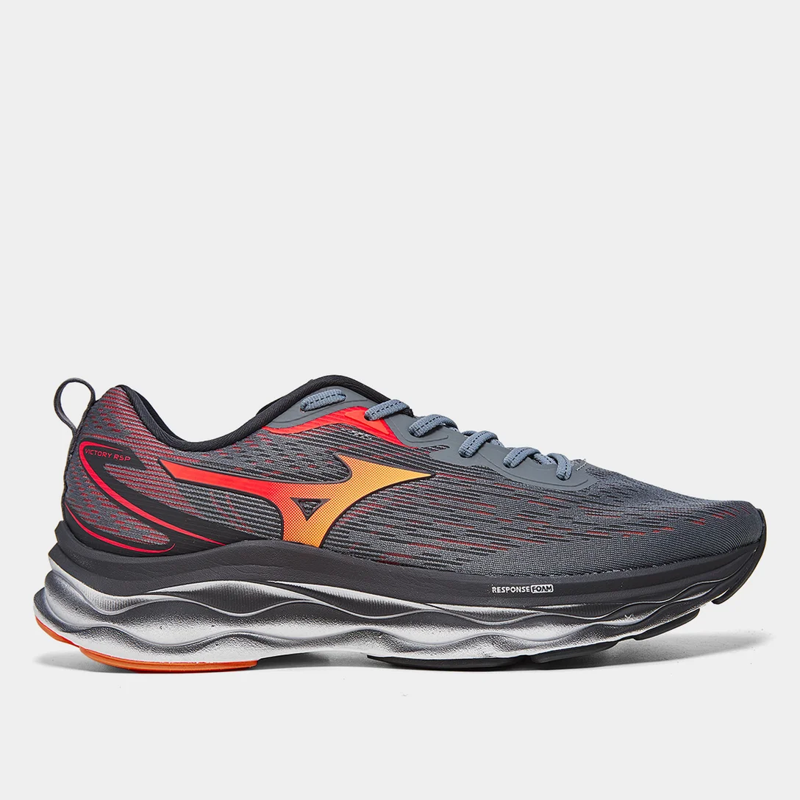
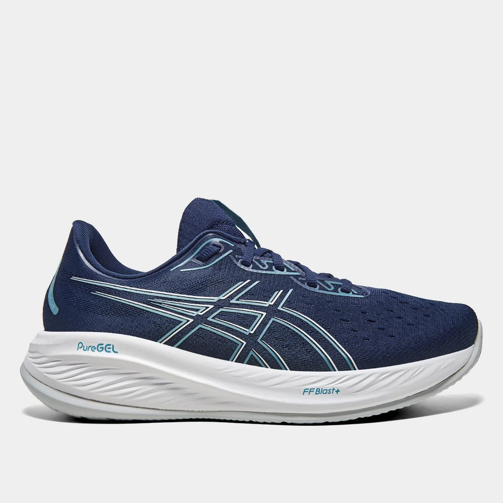

Onde performance e sustentabilidade se unem proporcionando uma sensação de maciez a cada passada. O seu cabedal e solado são feitos com mais de 70% de materiais reciclados (% peso) reduzindo em mais de 10% a emissão de CO2. O combo triplo da tecnologia Enerzy (Mizuno Enerzy Core, Mizuno Enerzy Lite e Mizuno Enerzy) proporciona uma sensação de ultra maciez sem abrir mão da estabilidade. Seu solado possui a tecnologia G3, para melhorar o grip e reduzir o seu peso. O tênis mais sustentável da história da Mizuno. Preço Promocional : R$ 699,99
Tenis Mizuno em Promoção : Tênis Mizuno Victory
Muito mais que um tênis de corrida, o Tênis Masculino Mizuno Victory, pode ser seu companheiro ideal para o cotidiano. Modelo desenvolvido em material durável e design ultra moderno que te acompanha no dia a dia de trabalho, até os treinos de rua e academia. O cabedal conta com suporte no calcanhar para evitar lesões, tira de fácil calce, forro acolchoado e ajuste em cadarço. O amortecimento ResponseFoam aumenta a dinâmica do movimento e auxilia no impulso da passada. Já o solado em borracha x10 garante maior durabilidade e flexibilidade para sua corrida. Vista um short de corrida e uma regata esportiva para mood completo. Peça já seu tênis masculino de corrida da Mizuno!
Preço Promocional : R$ 332,49
Tenis Asics em Promoção : Tênis Asics Gel-Cumulus 26
Procurando o melhor para suas corridas? Conheça o Tênis Asics Gel-Cumulus 26 Masculino! Elaborado para quem ama correr, ele oferece conforto excepcional, amortecimento superior e durabilidade impressionante. As tecnologias avançadas desse modelo, redefine o conceito de conforto e desempenho. Com amortecimento FF Blast proporciona uma sensação de maciez e resposta rápida a cada passo, enquanto o Gel puro oferece absorção de impacto em áreas críticas, o que faz com que seus limites sejam desafiados com segurança. Além disso, a palmilha Ortholite X-30 garante suporte adicional e conforto duradouro. Perfeito para corridas de longa distância, como meia maratona, o Cumulus 26 suporta cerca de 800 km em corridas, garantindo o melhor desempenho a cada km.
Preço Promocional : R$ 795,87
Tênis Nike Downshifter 13
Quer esteja começando sua jornada de corrida ou seja um especialista ansioso para mudar seu ritmo, o Downshifter 13 está pronto para o passeio. Com um cabedal renovado, amortecimento e durabilidade, ele ajuda você a encontrar aquele equipamento extra ou a dar o primeiro passo para ir em busca de seus objetivos.Feito com Nike GrindO solado é feito com pelo menos 15% de material Nike Grind, um material produzido com retalhos do processo de fabricação dos calçados.Tela ventiladaMesh macio e confortável oferece um alto nível de respirabilidade.Com suporte e seguroUma faixa de ajuste interno atualizada oferece contenção ao redor do meio do pé para suporte e segurança.
Preço Promocional : R$ 322,99